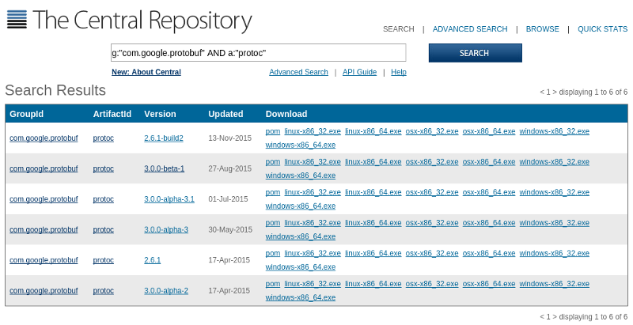

TL;DR – This post explains how to compile Protocol Buffers schemas into Java sources in Maven. Over the course of time, there appeared plugins like protoc-jar-maven-plugin. Nevertheless, the steps below still present a value to understand the necessary plumbing and some best practices (e.g., shading) that are not covered by the plugins.
Java build systems have always been a second class citizen for Protocol
Buffers. As is the case for
many other Java serialization frameworks (e.g., Cap’n
Proto,
FlatBuffers), Protocol Buffers does
not provide a native Java compiler which you can inject into Maven
dependencies and invoke a plugin to compile .proto files into .java
sources. Hence, programmers needed to have protoc (Proto Buffers Compiler)
binary on their development machine and call this platform-dependent binary
during Maven build. This totally violates the environment independent build of
a project. Fortunately, Google releases platform-specific protoc binaries in
the form of Maven artifacts.

We can add these artifacts as a compile-time dependency to our Maven project
and invoke the platform-dependent binary to compile .proto sources.
Let’s start with defining certain properties for library versions and input/output directories for the Protocol Buffers compiler.
<properties>
<!-- protobuf paths -->
<protobuf.input.directory>${project.basedir}/src/main/proto</protobuf.input.directory>
<protobuf.output.directory>${project.build.directory}/generated-sources</protobuf.output.directory>
<!-- library versions -->
<build-helper-maven-plugin.version>1.9.1</build-helper-maven-plugin.version>
<maven-antrun-plugin.version>1.8</maven-antrun-plugin.version>
<maven-dependency-plugin.version>2.10</maven-dependency-plugin.version>
<maven-shade-plugin.version>2.4.2</maven-shade-plugin.version>
<os-maven-plugin.version>1.4.1.Final</os-maven-plugin.version>
<protobuf.version>3.0.0-beta-1</protobuf.version>
</properties>protoc compiles .proto files into .java files such that the generated
sources rely on certain common classes. These classes are provided by
protobuf-java artifact:
<dependency>
<groupId>com.google.protobuf</groupId>
<artifactId>protobuf-java</artifactId>
<version>${protobuf.version}</version>
</dependency>protoc Maven artifact is provided in various platform-specific
classifications: linux-x86_32, linux-x86_64, osx-x86_32, osx-x86_64,
windows-x86_32, windows-x86_64. In order to pick the right artifact, we
will employ os.detected.classifier property exposed by os-maven-plugin:
<build>
<extensions>
<!-- provides os.detected.classifier (i.e. linux-x86_64, osx-x86_64) property -->
<extension>
<groupId>kr.motd.maven</groupId>
<artifactId>os-maven-plugin</artifactId>
<version>${os-maven-plugin.version}</version>
</extension>
</extensions>
<!-- ... -->
</build>We will use maven-dependency-plugin to download the platform-specific
protoc binary suitable for the current build platform and copy it into
project.build.directory.
<!-- copy protoc binary into build directory -->
<plugin>
<groupId>org.apache.maven.plugins</groupId>
<artifactId>maven-dependency-plugin</artifactId>
<version>${maven-dependency-plugin.version}</version>
<executions>
<execution>
<id>copy-protoc</id>
<phase>generate-sources</phase>
<goals>
<goal>copy</goal>
</goals>
<configuration>
<artifactItems>
<artifactItem>
<groupId>com.google.protobuf</groupId>
<artifactId>protoc</artifactId>
<version>${protobuf.version}</version>
<classifier>${os.detected.classifier}</classifier>
<type>exe</type>
<overWrite>true</overWrite>
<outputDirectory>${project.build.directory}</outputDirectory>
</artifactItem>
</artifactItems>
</configuration>
</execution>
</executions>
</plugin>Note how we employed os.detected.classifier variable provided by
os-maven-plugin to inject the platform-specific binary dependency.
Now we have our protoc binary in project.build.directory. We can use
maven-antrun-plugin plugin to execute protoc for compiling .proto files
into .java sources.
<!-- compile proto buffer files using copied protoc binary -->
<plugin>
<groupId>org.apache.maven.plugins</groupId>
<artifactId>maven-antrun-plugin</artifactId>
<version>${maven-antrun-plugin.version}</version>
<executions>
<execution>
<id>exec-protoc</id>
<phase>generate-sources</phase>
<configuration>
<target>
<property name="protoc.filename" value="protoc-${protobuf.version}-${os.detected.classifier}.exe"/>
<property name="protoc.filepath" value="${project.build.directory}/${protoc.filename}"/>
<chmod file="${protoc.filepath}" perm="ugo+rx"/>
<mkdir dir="${protobuf.output.directory}" />
<path id="protobuf.input.filepaths.path">
<fileset dir="${protobuf.input.directory}">
<include name="**/*.proto"/>
</fileset>
</path>
<pathconvert pathsep=" " property="protobuf.input.filepaths" refid="protobuf.input.filepaths.path"/>
<exec executable="${protoc.filepath}" failonerror="true">
<arg value="-I"/>
<arg value="${protobuf.input.directory}"/>
<arg value="--java_out"/>
<arg value="${protobuf.output.directory}"/>
<arg line="${protobuf.input.filepaths}"/>
</exec>
</target>
</configuration>
<goals>
<goal>run</goal>
</goals>
</execution>
</executions>
</plugin>protoc compiler placed the generated Java sources into
protobuf.output.directory. We need to add the sources in this directory to
the package:
<!-- add generated proto buffer classes into the package -->
<plugin>
<groupId>org.codehaus.mojo</groupId>
<artifactId>build-helper-maven-plugin</artifactId>
<version>${build-helper-maven-plugin.version}</version>
<executions>
<execution>
<id>add-classes</id>
<phase>generate-sources</phase>
<goals>
<goal>add-source</goal>
</goals>
<configuration>
<sources>
<source>${protobuf.output.directory}</source>
</sources>
</configuration>
</execution>
</executions>
</plugin>Say you are done with your project, which includes protobuf-java version
3.0.0-beta-1 as a dependency. What if there is another package that is
included as a direct or transitive Maven dependency and injects
protobuf-java version 2.5.0? Then you are doomed; you will get a package
version conflict. In order to avoid this problem, you can leverage
maven-shade-plugin to relocate com.google.protobuf package contents to a
private package within your project:
<!-- shade protobuf to avoid version conflicts -->
<plugin>
<groupId>org.apache.maven.plugins</groupId>
<artifactId>maven-shade-plugin</artifactId>
<version>${maven-shade-plugin.version}</version>
<executions>
<execution>
<phase>package</phase>
<goals>
<goal>shade</goal>
</goals>
<configuration>
<relocations>
<relocation>
<pattern>com.google.protobuf</pattern>
<shadedPattern>${project.groupId}.${project.artifactId}.shaded.protobuf</shadedPattern>
</relocation>
</relocations>
</configuration>
</execution>
</executions>
</plugin>This will relocate the contents of com.google.protobuf package to
${project.groupId}.${project.artifactId}.shaded.protobuf and make the
classes accessible under this namespace. That is, instead of using
import com.google.protobuf.*;in your project, you should use the new relocated package name:
import groupId.artifactId.shaded.protobuf.*;(Note that you need to replace groupId and artifactId literals in the Java
code.)
In this post, I tried to summarize the necessary set of steps to compile Protocol Buffers schema into Java classes using plain Maven magic. This is important to get a platform-independent build for a project.
The absence of a proper Maven plugin to handle all these steps for us causes
quite a bit of pom.xml pollution. Nevertheless, (de)serializers for the
messaging medium are generally distributed in a separate artifact, hence this
will probably end up being the entire content of your pom.xml.